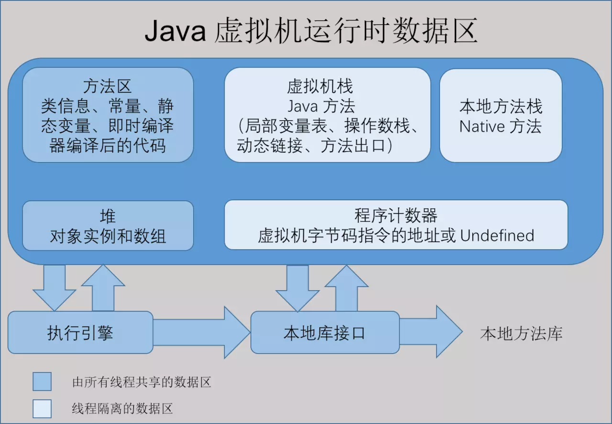
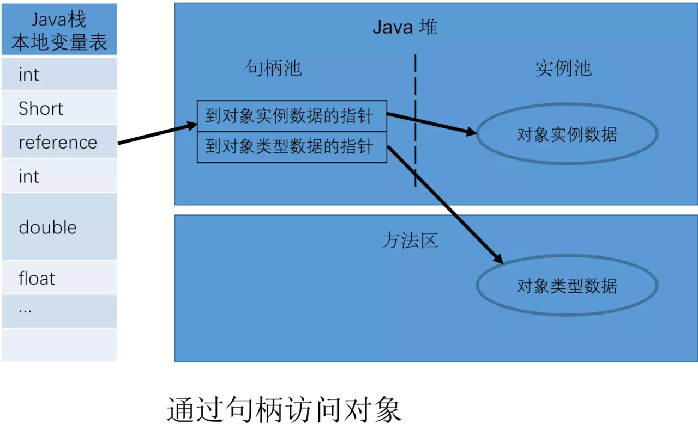
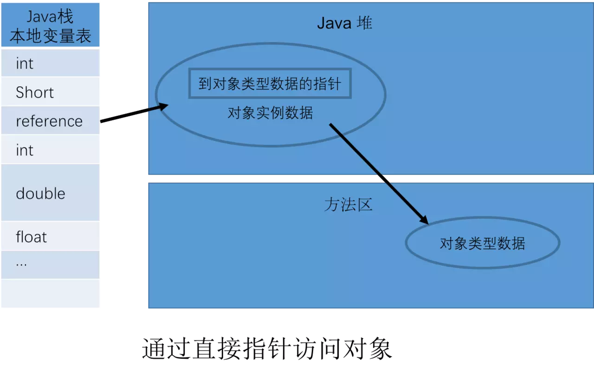

进程和线程的区别
进程是资源分配的最小单位，线程是程序执行的最小单位。
进程有自己的独立地址空间，每启动一个进程，系统就会为它分配一个地址空间、建立数据表来维护代码段、堆栈段和数据段，这种操作非常昂贵。而线程是共享进程中的数据的，使用相同的地址空间，因此 CPU 切换一个线程的花费要比进程小很多，同时创建一个线程的开销也要比进程小很多。
同一个进程中可以包括多个线程，并且线程共享整个进程的资源（寄存器、堆栈、上下文），一个进程至少包含一个线程。线程之间的通信更加方便，同一进程下的线程共享全局变量、静态变量等数据，而进程之间的通信则需要以通信的方式（IPC）进行。
运行时数据区域
Java 虚拟机在执行 Java 程序的过程中会将其管理的内存划分为若干个不同的数据区域，这些区域有各自的用途、创建和销毁的时间，有些区域随虚拟机进程的启动而存在，有些区域则是依赖用户线程的启动和结束来建立和销毁。Java 虚拟机所管理的内存包括以下几个运行时数据区域，如下图所示：

程序计数器（Program Counter Register）
程序计数器（Program Counter Register）是一块较小的内存空间，它可以看成是当前线程所执行字节码的行号指示器。在计算机中，其实程序计数器就是一个寄存器，依据不同计算机细节的差异，它可以存放当前正在被执行的指令，也可以放下一个被执行的指令。
在虚拟机的概念模型中，字节码解释器工作时就是通过改变这个计数器的值来选取下一条需要执行的字节码指令的。
由于 Java 虚拟机的多线程是通过线程轮询切换并分配处理器执行时间的方式来实现的，在任何一个确定的时候，一个处理器都只会执行一条线程中的指令，因此为了线程切换之后能过恢复到正确的执行位置，每条线程都需要拥有一个独立的程序计数器，各条线程之间的计数器互不影响，独立存储，所以程序计数器是线程私有的内存，也就是它属于线程隔离区的。
如果线程执行的是一个 Java 方法，这个计数器记录的就是正在执行的虚拟机字节码指令地址；如果正在执行的是 Native 方法，那么这个计数器的值就是（Undefined）。
此内存区域是唯一一个在 Java 虚拟机规范中没有规定任何 OutOfMemoryError 情况的区域。
如果线程正在执行一个 Java 方法，这个计数器记录的是正在执行的虚拟机字节码指令的地址；如果正在执行的是 Native 方法，这个计数器的值则为 (Undefined)。此内存区域是唯一一个在 Java 虚拟机规范中没有规定任何 OutOfMemoryError 情况的区域。
虚拟机栈（VM Stack）
Java 虚拟机栈（Java Virtual Machine Stack）也是线程私有的，即他的生命周期和线程相同。
在 Java 中，JVM 中的栈记录了线程的方法调用，每个线程拥有一个栈，在某个线程的运行过程中，如果有新的方法调用，那么该线程对应的栈就会增加一个存储单元，即栈针（Stack Frame）。
虚拟机栈描述的是 Java 方法执行的内存模型：每个方法在执行时都会创建一个栈帧（Stack Frame）用于存储局部变量表、操作数栈、动态连接、方法出口等信息。每一个方法从调用至完成的过程，就对应着一个栈帧在虚拟机栈中从入栈到出栈的过程。
当被调用方法运行结束时，该方法对应的帧将被删除，参数和局部变量所占据的空间也随之释放。线程回到原方法，继续执行。当所有的栈都清空时，程序也随之运行结束。
我们经常说的栈内存其实就是现在讲的虚拟机栈，或者说是虚拟机栈中局部变量表部分。
局部变量表存放了编译器可知的各种基本数据类型（boolean、byte、char、short、int、float、long、double）、对象引用（reference 类型，它不等同于对象本身，可能是指向对象起始位置的引用指针，也可能是指向一个代表对象的句柄或其他与此对象相关的位置，引用所指向的对象保存在堆中（引用可能为 Null，即不指向任何对象））和 returnAddress 类型（指向了一条字节码指令的地址）。
其中64位长度的long和double类型的数据会占用2个局部变量空间（Slot），其余数据类型只占用1个。局部变量表所需要的内存空间在编译时期完成分配。当进入一个方法时，这个方法需要在帧中分配多大的局部变量空间是完全确定的，在方法运行期间不会改变局部变量表的大小。
异常有两种：
1、线程请求的栈深度大于虚拟机所允许的深度将抛出 StackOverflowError 异常 （递归调用）
2、如果虚拟机可以动态扩展，如果扩展时已经无法申请到足够的内存就会抛出 OutOfMemeoryError 异常。
本地方法栈（Native Method Stack）
本地方法栈（Native Method Stack）与虚拟机栈所发挥的作用是非常相似的。他们之间的区别就是 Java 虚拟机栈是位虚拟机执行 Java 方法（也就是字节码）服务，而本地方法栈为位虚拟机使用到的 Native 方法服务。
其实虚拟机规范中对本地方发栈中方法所使用的语言、使用方式以及数据结构都没有强制规定，因此具体的虚拟机可以自由地实现它。甚至在有的虚拟机（如 Sun HotSpot 虚拟机）直接就把本地方法栈和虚拟机栈合二为一。与虚拟机栈一样，本地方法栈区域也会抛出 StackOverflowError 和 OutOfMemory 异常。
堆（Heap）
对于大多数应用来说，Java 堆（Java Heap）是 Java 虚拟机管理的内存中最大的一块。Java 堆是被所有线程共享的一块数据区域，在虚拟机启动时创建，这一内存区域的唯一目的就是存放对象实例，几乎所有的对象实例都在这里分配内存。但是随着 JIT 编译器的发展与逃逸分析技术逐渐成熟，栈上分配、标量替换优化技术将会导致一些微妙的变化发生，所有的对象都分配在堆上也逐渐变得不是那么“绝对”。
堆中可细分为新生代和老年代，在细分可以分为 Ede n空间、Form Survivor 空间、to Survivor 空间。
Java 堆是垃圾收集器管理的主要区域，因此很多时候也被称为“GC堆”。
根据 Java 虚拟机规范规定，Java 堆可以处于物理上不连续的内存中，即只要逻辑上是连续的即可，就像我们的磁盘空间一样。在实现时，可以固定大小也是可扩展的。主流的虚拟机都是按照可扩展来实现的（通过 -Xmx 和 -Xms 来控制）。如果在堆中没有内存可分配，并且堆也无法继续扩展时，将会抛出 OutOfMemortError 异常。
Java 的普通对象存活在堆中，与栈不同，堆的空间不会随着方法调用结束而清空。因此，在某个方法中创建的对象，可以在方法调用结束之后，继续存在堆中。这带来的一个问题是，如果我们不断的创建新的对象，内存控件将会最终消耗殆尽。
方法区（Method Area）
方法区（Method Area）与 Java 堆一样，是各个线程共享的内存区域，它用于存储已经被虚拟机加载的类信息、常量、静态变量、即时编译器编译之后的代码等数据。虽然 Java 虚拟机将其描述为堆的一个逻辑部分，但它却有一个别名叫做 Non-Heap（非堆）。目的是与 Java 堆区分开来。（以前很多人把方法区称为永久代，现在JDK1.8中已经用元数据区域取代了永久代）。
运行时常量池：
运行时常量池（Runtime Constant Pool）是方法区的一部分。Class 文件中除了有类的版本、字段、方法、接口等描述信息外，还有一项信息就是常量池。用于存放编译期生成的各种字面量和符号引用，这部分内容将在类加载后进入到方法区的运行时常量池中存放。并非预置入 Class 文件中常量池的内容才进入方法运行时常量池，运行期间也可能将新的常量放入池中，这种特性被开发人员利用得比较多的便是 String 类的 intern() 方法。
当方法区无法满足内存分配需求时，抛出 OutOfMemoryError 异常。
总结每个区域存储的内容，如下图所示：

直接内存
由于直接内存（Direct Memory）并不是 Java 虚拟机运行时数据区的一部分，也不是 Java 虚拟机规范中定义的内存区域，但是这部分也被频繁使用，而且也可能导致内存溢出异常出现，所以也放到这一部分进行简介。
先让，本机直接内存的分配不会受到 Java 堆大小的限制，但是肯定还是会受到本机总内存大小以及处理器寻址空间的限制。管理员在配置虚拟机参数时，会根据实际内存设置 -Xmx 等参数信息，但经常会忽略直接内存，使得各个内存区域总和大于物理内存限制（包含物理的和操作系统级的限制），从而导致动态扩展时出现 OutOfMemoryError 异常。
JDK1.4 加入了 NIO，引入一种基于通道与缓冲区的 I/O 方式，它可以使用 Native 函数库直接分配堆外内存，然后通过一个存储在 Java 堆中的 DirectByteBuffer 对象作为这块内存的引用进行操作。因此避免了在 Java 堆和 Native 堆中来回复制数据，提高了性能。
HotSpot 虚拟机对象探秘
主要介绍数据是如何创建、如何布局以及如何访问的。
对象的创建
虚拟机遇到 new 指令时，首先检查这个指令的参数是否能在常量池中定位到一个类的符号引用，并且检查这个符号引用代表的类是否已经被加载、解析和初始化过。如果没有，执行相应的类加载。
类加载检查通过之后，为新对象分配内存(内存大小在类加载完成后便可确认)。在堆的空闲内存中划分一块区域(‘指针碰撞-内存规整’或‘空闲列表-内存交错’的分配方式)。
前面讲的每个线程在堆中都会有私有的分配缓冲区(TLAB)，这样可以很大程度避免在并发情况下频繁创建对象造成的线程不安全。
内存空间分配完成后会初始化为 0(不包括对象头)，接下来就是填充对象头，把对象是哪个类的实例、如何才能找到类的元数据信息、对象的哈希码、对象的 GC 分代年龄等信息存入对象头。
执行 new 指令后执行 init 方法后才算一份真正可用的对象创建完成。
对象的内存布局
在 HotSpot 虚拟机中，分为 3 块区域：对象头（Header）、实例数据（Instance Data）和 对齐填充（Padding）。
对象头（Header）：包含两部分，第一部分用于存储对象自身的运行时数据，如哈希码、GC 分代年龄、锁状态标志、线程持有的锁、偏向线程 ID、偏向时间戳等，32 位虚拟机占 32 bit，64 位虚拟机占 64 bit。官方称为 ‘Mark Word’。第二部分是类型指针，即对象指向它的类的元数据指针，虚拟机通过这个指针确定这个对象是哪个类的实例。另外，如果是 Java 数组，对象头中还必须有一块用于记录数组长度的数据，因为普通对象可以通过 Java 对象元数据确定大小，而数组对象不可以。
实例数据（Instance Data）：程序代码中所定义的各种类型的字段内容（包含父类继承下来的和子类中定义的）。
对齐填充（Padding）：不是必然需要，主要是占位，保证对象大小是某个字节的整数倍。
对象的访问定位
使用对象时，通过栈上的 reference 数据来操作堆上的具体对象。
通过句柄访问：Java 堆中会分配一块内存作为句柄池。reference 存储的是句柄地址。如下图所示：

使用直接指针访问：reference 中直接存储对象地址。如下图所示：

比较：使用句柄的最大好处是 reference 中存储的是稳定的句柄地址，在对象移动(GC)是只改变实例数据指针地址，reference 自身不需要修改。直接指针访问的最大好处是速度快，节省了一次指针定位的时间开销。如果是对象频繁 GC 那么句柄方法好，如果是对象频繁访问则直接指针访问好。